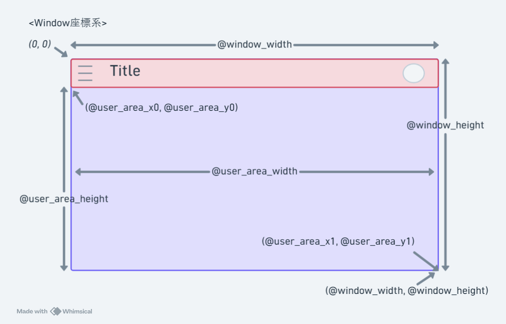
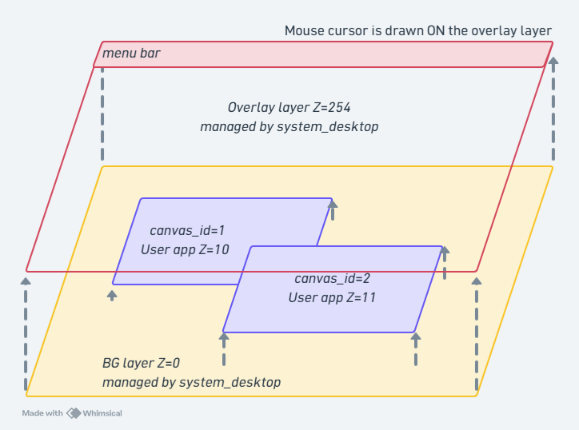
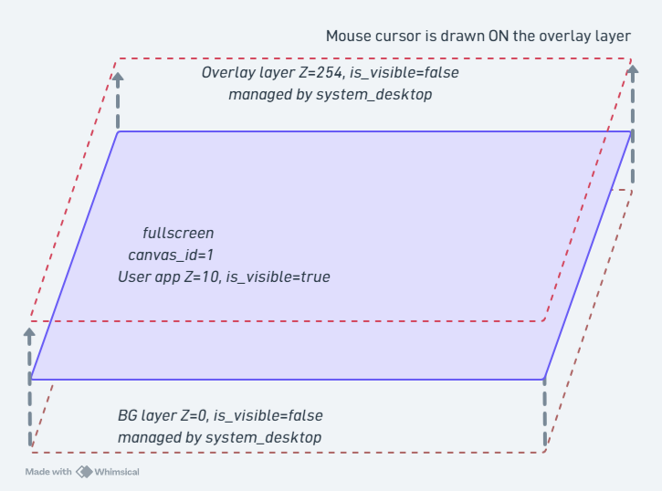

Drawing (FmrbGfx)¶
FmrbGfx is the class that provides drawing APIs. In apps that inherit from FmrbApp, it is accessible as @gfx.
Nothing appears until present is called
All drawing commands are accumulated in a buffer. They reach the graphics side and appear on screen when @gfx.present is called.
Coordinate System¶
The origin (0, 0) is at the top-left of the area the app owns, with X increasing to the right and Y increasing downward: inside the frame of a framed window (below the title bar), the window's top-left for a frameless window (window_frame = "none"), and the screen's top-left in fullscreen. The same code draws in the same place in all three, and the size of the area is @user_area_width × @user_area_height. Mouse events (ev[:x], ev[:y]), sprites and UI widgets use the same origin.
To draw outside the area — over the frame, or a title of the app's own — use window_gfx, a second FmrbGfx on the same canvas whose (0, 0) is the window's top-left. clear still paints the whole canvas; to wipe the area, use clear_user_area.
Each window has its own coordinate system. See the image below for reference.

Color¶
Uses RGB332 (8-bit, R:3 G:3 B:2). Specified as an integer from 0x00 to 0xFF.
For some colors, constants like FmrbGfx::WHITE are also provided. A helper method FmrbGfx.rgb_to_332(r, g, b) is available to convert from 24-bit values.
You can also check colors on sites like this one.
A feature for using a single designated color as a transparent color is also available.
Drawing Layer Overview¶
Drawing layers in normal mode

Drawing layers in fullscreen mode

Color Constants¶
| Constant | Value |
|---|---|
FmrbGfx::BLACK |
0x00 |
FmrbGfx::WHITE |
0xFF |
FmrbGfx::RED |
0xE0 |
FmrbGfx::GREEN |
0x1C |
FmrbGfx::BLUE |
0x03 |
FmrbGfx::YELLOW |
0xFC |
FmrbGfx::CYAN |
0x1F |
FmrbGfx::MAGENTA |
0xE3 |
FmrbGfx::GRAY |
0x6D |
Color Conversion¶
FmrbGfx.rgb_to_332(255, 128, 0) # -> 0xF0 etc.
FmrbGfx.hsv_to_rgb(120, 255, 255) # -> [r, g, b] (each 0..255)
Control Methods¶
| Method | Purpose |
|---|---|
clear(color) |
Clear the entire screen |
present |
Apply accumulated drawing commands to the screen |
Basic Shapes¶
All take a color (RGB332) as the last argument.
| Method | Signature |
|---|---|
set_pixel |
set_pixel(x, y, color) |
draw_line |
draw_line(x1, y1, x2, y2, color) |
draw_thick_line |
draw_thick_line(x0, y0, x1, y1, thickness, color). Stacked 1-pixel lines — the backend has no thick-line primitive |
draw_rect |
draw_rect(x, y, w, h, color) (outline only) |
fill_rect |
fill_rect(x, y, w, h, color) (filled) |
blend_rect |
blend_rect(x, y, w, h, color, mode:) (mode: 0=ADD, 1=XOR) |
draw_circle |
draw_circle(x, y, r, color) |
fill_circle |
fill_circle(x, y, r, color) |
draw_ellipse |
draw_ellipse(x, y, rx, ry, color) |
fill_ellipse |
fill_ellipse(x, y, rx, ry, color) |
draw_round_rect |
draw_round_rect(x, y, w, h, radius, color) |
fill_round_rect |
fill_round_rect(x, y, w, h, radius, color) |
draw_triangle |
draw_triangle(x0, y0, x1, y1, x2, y2, color) |
fill_triangle |
fill_triangle(x0, y0, x1, y1, x2, y2, color) |
draw_arc |
draw_arc(x, y, r0, r1, angle0, angle1, color) |
fill_arc |
fill_arc(x, y, r0, r1, angle0, angle1, color) |
Angles for draw_arc / fill_arc are integers in degrees. r0 is the inner radius, r1 is the outer radius.
Text Drawing¶
@gfx.set_text_size(2) # 1 to 4
@gfx.draw_text(10, 20, "Hello",
FmrbGfx::BLACK) # No bg -> transparent
@gfx.draw_text(10, 40, "Hi",
FmrbGfx::WHITE,
FmrbGfx::BLUE) # With bg -> opaque
| Method | Purpose |
|---|---|
set_text_size(size) |
Text size. 1 to 4 |
draw_text(x, y, text, color [, bg_color], mixed: false) |
Draw text. mixed: true enables ASCII/Japanese hybrid rendering |
set_font(family, size = nil) |
Switch font (see below) |
current_font / current_text_size |
Current font / size (read-only) |
Fitting text into a width¶
Measured in pixels with the current font, so the same call works for ASCII and Japanese and on every screen. They remember nothing.
| Method | Purpose |
|---|---|
fit_text(str, width [, mark, mark_width, font]) |
A text that fits comes back unchanged. Otherwise it is cut to width, with mark ("…", "..") appended when given |
wrap_text(str, width) |
An array of one or two lines: broken at the last space when the rest fits, else at the width; a second line still too long ends in … |
draw_text_lines(x, y, str, width, color, line_h) |
Draws the lines of wrap_text, line_h apart, and returns the y below the last one |
draw_button(x, y, w, h, label, fill, fg [, radius]) |
The picture of a rounded button: fill behind, label centred in fg. Only the picture — pair it with FmrbUI::HitAreas for the click |
@gfx.draw_text(x, y, @gfx.fit_text(title, 100, "…"), theme_fg)
@gfx.draw_button(x, y, 60, 16, "OK", theme_accent, theme_fg_light)
Japanese Text and Font Switching¶
By switching to a Japanese font with set_font(family, size), you can draw UTF-8 strings directly.
# Default ASCII font (Font0, 6x8)
@gfx.set_font(:default)
@gfx.draw_text(10, 20, "Hello", FmrbGfx::BLACK)
# Japanese 8px (misaki_8, small size matching the system UI)
@gfx.set_font(:ja, 8)
@gfx.draw_text(10, 40, "こんにちは", FmrbGfx::BLACK)
# Japanese 12px (efontJA_12, larger and more readable)
@gfx.set_font(:ja, 12)
@gfx.draw_text(10, 60, "ファミリーmruby", FmrbGfx::BLACK)
Supported Fonts¶
family |
size |
Description |
|---|---|---|
:default |
(not specifiable) | Font0 6x8 ASCII. Default at startup |
:ja |
8 |
misaki_8 8x8, same size as system UI |
:ja |
12 |
efontJA_12 12x12, more readable |
:ja |
16 |
efontJA_16 16x16, for headings and slides |
:ja_bold |
12 |
The bold cut of efontJA_12 |
set_font tells you what it chose¶
A machine does not have to carry every font. set_font picks the nearest thing it has —
a size it does not carry falls back to 12, and a bold it does not carry to the regular cut
— and returns what it actually selected, as [family, size] (or [:default]).
got = @gfx.set_font(:ja_bold, 12)
bold_by_hand = (got[0] != :ja_bold) # draw twice, one pixel apart, if it matters
That return value is also what text_width and font_height then measure, so a layout
built from them stays right on a machine with fewer fonts.
Hybrid Drawing (mixed: true)¶
Strings containing mixed ASCII and Japanese characters can be drawn in a single draw_text call. ASCII portions are rendered with Font0 (6x8) and UTF-8 multibyte portions with misaki_8 (8x8).
@gfx.draw_text(10, 20, "puts 'こんにちは'",
FmrbGfx::BLACK, mixed: true)
Convenient for code examples and bilingual UI strings.
draw_text_mixed(x, y, str, color, bg_color = nil) is the same thing with positional
arguments. Keyword arguments build a Hash on every call, which a redraw path that must not
allocate cannot afford; this form does not.
The window frame keeps your font
The base class's frame drawing (clear_user_area, draw_window_frame) always draws the title bar with the default 6x8 font and then restores the font setting from before the call. There is no need to call set_font again each frame in your app.
JA font loading cost
The first call to set_font(:ja, ...) takes several tens of milliseconds as the graphics side prepares the font data. Ideally, call it once in on_create.
Example (Japanese)¶
class HelloJaApp < FmrbApp
def on_create
clear_user_area(FmrbGfx::WHITE)
@gfx.set_font(:ja, 12)
@gfx.draw_text(8, 8,
"こんにちは、Family mruby!", FmrbGfx::BLACK)
@gfx.present
end
end
The Fonts pages of the PicoRuby demo (/app/demo/picoruby.app.rb) switch between them all: the default font, Japanese at 8, 12 and 16 pixels, mixed and hybrid drawing, and Japanese scaled up.
Images¶
An image is decoded and held on the graphics side, which reads its own filesystem. Getting one on screen is therefore three steps: put the file where that side can read it, create the image from it, draw it.
@gfx.sync_file("/usr/share/backgrounds/bg_426x240.png")
img = @gfx.create_image("/usr/share/backgrounds/bg_426x240.png")
@gfx.draw_image(img[:id], x: 10, y: 20)
@gfx.delete_image(img[:id])
Or all of it at once:
@gfx.load_image("/usr/share/backgrounds/bg_426x240.png", coord: :center)
| Method | Returns / does |
|---|---|
sync_file(path, dest: nil) |
Make the graphics side's copy match this one, transferring only when it differs (size + CRC32). This — not file_status[:exists] — is what to use for an asset, or an edited file stays stale for ever |
transfer_file(path, dest: nil) |
Transfer unconditionally |
file_status(path) |
{exists:, size:} on the graphics side |
create_image(path) |
{id:, width:, height:}, or nil. PNG, up to about 200 KB |
draw_image(id, x: 0, y: 0, scale_x: 1.0, scale_y: 0.0) |
Draw it. scale_y: 0.0 means "the same as scale_x" |
draw_tile(image_id, src_x, src_y, w, h, dst_x:, dst_y:) |
Stamp a sub-region of a SpriteImage onto the canvas |
delete_image(id) |
Release it |
load_image(path, coord: nil) |
Sync, create, draw, present and delete in one call. coord: takes [x, y] or :center |
Two doors
create_image takes a PNG, a whole picture to draw. A sprite or a tile sheet goes
through the other door, SpriteImage#load_bmp, which in the
development version reads a PNG as well as an RGB332 BMP. Handing a BMP to
create_image does not raise — you get an empty image the size of the screen and
nothing appears. See Image & Icon Files.
When to use draw_tile¶
You can directly stamp part of a SpriteImage onto the canvas without creating a SpriteInstance. This is suitable for BG rendering where you tile 16x16 cells from a tile sheet image one by one. The transparent color of a SpriteImage created with use_transparent: true is respected, enabling layered map drawing.
sheet = SpriteImage.new(@gfx, width: 64, height: 32,
transparent_color: 0, use_transparent: true)
sheet.load_bmp("/usr/share/sprites/test/tilesheet.bmp")
# Draw 16x16 from tilesheet at (0, 0) to canvas at (32, 16)
@gfx.draw_tile(sheet.id, 0, 0, 16, 16, dst_x: 32, dst_y: 16)
For a higher-level wrapper, see TileMap.
Masks¶
A 1bpp mask cuts a shape out of a SpriteImage as it is blitted: pixels are sampled from
the image and written only where the mask bit is set.
| Method | |
|---|---|
create_mask(width, height, data) |
Upload a mask and get its id. data is ceil(width / 8) * height bytes, MSB first; a 1 bit draws |
draw_image_masked(image_id, mask_id, x:, y:) |
Blit through the mask |
delete_mask(mask_id) |
Release it. Ordered behind any drawing that still refers to it |
Reading the canvas back¶
get_pixel(x, y) returns one RGB332 byte, and 0 outside the canvas. It is a synchronous
round trip to the graphics side, so it is not something to do per pixel in a loop.
Hardware scrolling (Modern only)¶
set_viewport(src_x, src_y, w, h) shows a moving window onto a canvas larger than the one
the app draws in, without redrawing anything. The canvas is addressed as a torus — the
source rectangle wraps around its edges — so a canvas slightly larger than the viewport can
scroll an arbitrarily large world if newly exposed tiles are stamped as it moves.
clear_viewport undoes it and composites the whole canvas again. The Retro backend ignores
both, so gate them on FmrbConst::CHIP_MODEL == "ESP32-P4".
Keeping sprites inside a rectangle¶
Sprites are composited on top of everything the canvas drew, so without a clip they paint over the window frame and title bar the app drew into the same canvas.
| Method | Purpose |
|---|---|
set_sprite_clip(x, y, w, h) |
Confine this canvas's sprites to that rectangle |
clear_sprite_clip |
Let them use the whole canvas again |
The rectangle is in sprite coordinates — the ones passed to SpriteInstance#move — and is
clamped to the canvas. A windowed app starts with its user area already set, so this is
only needed to narrow it further:
# reserve the top 10px for the score; sprites stay below it
@gfx.set_sprite_clip(0, 10,
@user_area_width, @user_area_height - 10)
Saving the screen to a file¶
export_frame(path) writes the picture the last present put on screen to a file, on the
display side's filesystem. It does not present: send present first, then this, and the
two keep their order.
@gfx.present
@gfx.export_frame("/mnt/sd/shot.jpg")
| Machine | |
|---|---|
| Modern | A JPEG, written by the SoC's encoder into the filesystem the two sides share, so File.exist? can tell when it is done |
| Simulator | A BMP, in the graphics side's own storage, which the app cannot see |
| Retro | Not supported; it says so in the log |
Video (Modern only)¶
video_open plays a file of concatenated JPEG frames into the canvas and hands back a
player. It returns nil anywhere else, so an app can fall back.
@video = @gfx.video_open("/mnt/sd/clip.mjpg", x: 8, y: 8, fps: 15, loop: true)
if @video
@video.play
...
@video.pause
@video.rewind
@video.stop
end
| Method | |
|---|---|
width / height |
The picture size the file turned out to have |
play / pause / stop / rewind |
Transport |
status |
0 idle, 1 playing, 2 paused, 3 finished |
playing? / finished? |
The two states worth asking about |
Whatever the app drew elsewhere on the canvas stays; do not draw inside the picture rectangle while it plays. One player exists at a time.
Composite Region Specification (set_composite_regions)¶
@gfx.set_composite_regions([
{dst_x: 0, dst_y: 0, w: 4, h: 4, transparent: true}, # Top-left rounded corner
{dst_x: w-4, dst_y: 0, w: 4, h: 4, transparent: true}, # Top-right
{dst_x: 0, dst_y: 4, w: w, h: h - 8, transparent: false}, # Center is opaque
# ...
])
A performance API that specifies which rectangles of the canvas are composited and how (transparent mode / opaque mode). Useful for rounded-corner windows where only the corners use transparency while the center uses a fast memcpy path. Maximum 8 regions. Passing nil or [] clears the setting.
Normally, the system configures this via the rounded_corners flag in .toml (App Configuration > rounded_corners), so user apps rarely need to use this directly.
NTSC Output Adjustment (Retro only)¶
| Method | Purpose | Range |
|---|---|---|
set_output_level(level) |
Overall brightness | 0..255 |
set_chroma_level(level) |
Saturation (color burst amplitude) | 0..255 |
Used for color adjustment on CRT monitors (see NTSC Test sample).
Example: Drawing Shapes¶
class ShapesApp < FmrbApp
def on_create
clear_user_area(FmrbGfx::WHITE)
x = 5
y = 5
@gfx.fill_rect(x, y, 30, 20, FmrbGfx::RED)
@gfx.fill_circle(x + 60, y + 10, 10, FmrbGfx::GREEN)
@gfx.draw_round_rect(x + 90, y, 30, 20, 4, FmrbGfx::BLUE)
@gfx.draw_text(x, y + 30, "Shapes",
FmrbGfx::BLACK)
@gfx.present
end
def on_update
500
end
end
Notes¶
Batch drawing with present
Within on_update, which is called at high frequency, it is recommended to issue multiple drawing commands and then call present only once. Calling present after every individual command can saturate the UART bandwidth.
Stay inside the area
Draw within 0..@user_area_width and 0..@user_area_height. Drawing past the bottom or right edge of a framed window paints over its border.